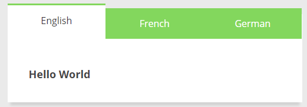
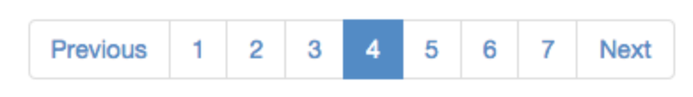
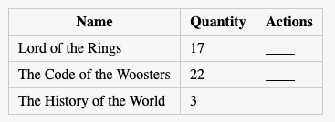

Interview - DOM questions
What is the DOM?
What is event bubbling and how does it work?
Is there any difference between window and document?
Does document.onload and window.onload fire at the same time?
Is attribute similar to property?
What are the different ways to get an element from DOM?
What is the fastest way to select elements by using css selectors?
How come, I can't use forEach or similar array methods on a NodeList?
If you need to implement getElementByAttribute, how would you implement it?
How would you add a class to an element by query selector?
How could I verify whether one element is child of another?
What is the best way to create a DOM element? Set innherHTML or use createElement?
What is createDocumentFragment and why you might use it?
What is reflow? What causes reflow? How could you reduce reflow?
What is repaint and when does this happen?
How could you make sure to run some JavaScript when DOM is ready like $(document).ready?
What is event bubble? How does event flows in DOM?
How could you capture all clicks in a page?
How can you get all the texts in a web page?
How would you destroy multiple list items with one click handler?
Create a button that is destroyed by clicking in it but two new buttons are created in it's place.
What is debounce and how could you implement debounce?
What is defer and async keyword does in a script tag?
If and website is slow how what would you do to make it faster?
Select or find nodes using document.querySelector
Traverse the DOM
If we wanted to implement a method of tracking every click that the user made on the site, how would we want to do this?
Manipulation: Add, remove, copy, and create nodes in the DOM tree
1) Create a function that, given a DOM Element on the page, will visit the element itself and all of its descendents (not just its immediate children). For each element visited, the function should pass that element to a provided callback function.
The arguments to the function should be:
a DOM element
a callback function (that takes a DOM element as its argument)
function Traverse(p_element,p_callback) {
p_callback(p_element);
var list = p_element.children;
for (var i = 0; i < list.length; i++) {
Traverse(list[i],p_callback); // recursive call
}
}
Preparation:
Widgets:
Tab

1st Way: Using with html/css when you hover show the content
2nd Way: Using with html/css/js when you click show the content
Pagination

Table
